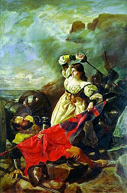

María Pita
Biografía
El 3 de mayo de 1589 las tropas inglesas llegaron a La Coruña dirigidas por el vicealmirante y antiguo corsario sir Francis Drake. El ataque formaba parte de la estrategia que mantenía la reina de Inglaterra Isabel I para despojar del trono de Portugal a quien había sido su cuñado y posterior rechazado pretendiente: el rey Felipe II (Rey de España desde 1556 y de Portugal desde 1580). Los ingleses, habiendo cercado la ciudad de La Coruña, abrieron una brecha en la muralla y comenzaron el asalto de la ciudad vieja. Durante el mismo mataron a Gregorio de Rocamunde, marido de María Pita, ella, llena de rabia, arrebató la lanza de la bandera inglesa y, con la misma, mató al alférez que dirigía el asalto, el hermano del almirante Francis Drake. Esto desmoralizó a la tropa inglesa, compuesta por doce mil efectivos y provocó su retirada. La tradición dice que este hecho se llevó a cabo al grito (en gallego) de "Quen teña honra, que me siga" (que en castellano significa: "quien tenga honor, que me siga").
Logros
- Defensa heróica de A Coruña (1589) Primer logro
- Reconocimiento por parte del rey Segundo logro
- Símbolo de la resistencia gallega y femeninaTercer logro
- Legado y memoriaCuarto logro logro